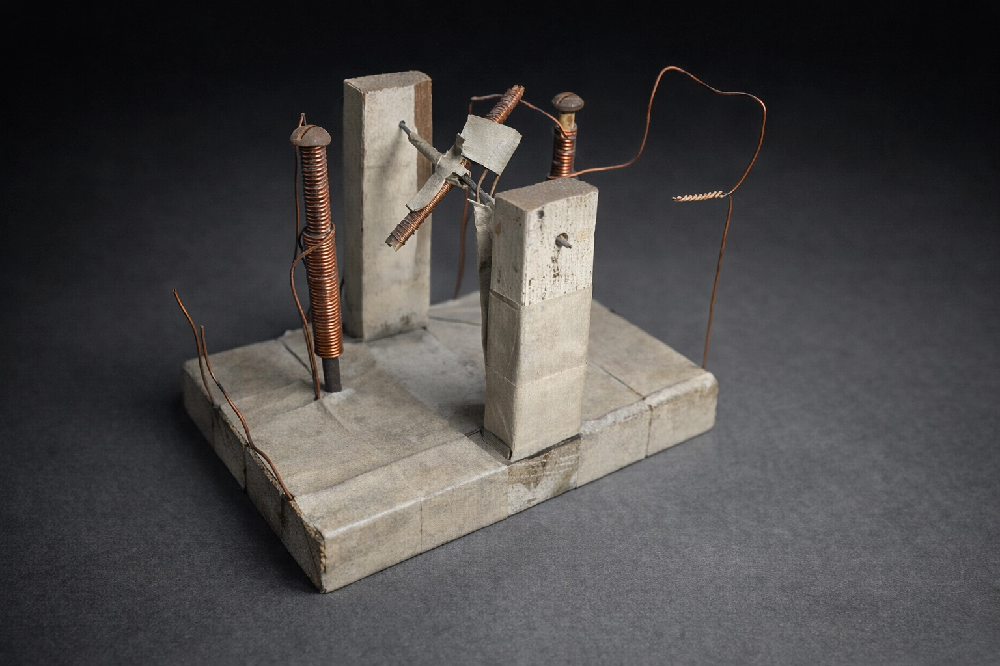

Proyecto 01
Motor de Inducción Primario
Génesis experimental · Electromagnetismo
Este dispositivo representa el punto de ruptura entre la teoría y la acción. Lo construí cuando tenía 12 años, es un ejercicio de arqueología técnica que utiliza el embobinado manual para domesticar el campo magnético. Más que un motor, es la prueba física de la conversión de energía eléctrica en movimiento rotatorio mediante fuerza electromotriz.
Fundamento: Interacción de campos magnéticos y torque mecánico.
Estado: Prototipo funcional.